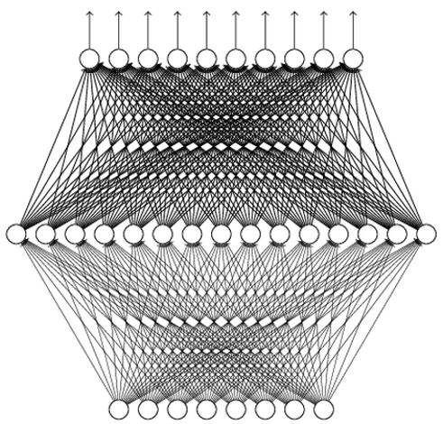

Your browser doesn't support the features required by impress.js, so you are presented with a simplified version of this presentation.
For the best experience please use the latest Chrome, Safari or Firefox browser.
DQN and REINFORCE (Finite Action Space)
Hao Su
(slides prepared by Shuang Liu)
Spring, 2021
Agenda
click to jump to the section.
Deep Q-Learning
Challenge of Representing $Q$
How do we represent $Q(s,a)$?
Maze has a discrete and small state space that we can deal with by an array.
However, for many cases the state space is continuous, or discrete but huge, array does not work.
Deep Value Network
Use a neural network to parameterize $Q$:
Input: state $s\in\bb{R}^n$
Output: each dimension for the value of an action $Q(s, a;\theta)$

Training Deep Q Network
Recall the Bellman optimality equation for action-value function:
\[
Q^*(s,a)=\bb{E}[R_{t+1}+\gamma \max_{a'}Q^*(S_{t+1}, a')|S_t=s, A_t=a]
\]
It is natural to build an optimization problem:
\[
L(\th)=\bb{E}_{\color{red}{(s,a,s')\sim Env}}[TD_{\th}(s,a,s')] \tag{TD loss}
\]
where $TD_{\th}(s,a,s')=\|Q_{\th}(s,a)-[R(s,a,s')+\gamma\max_{a'}Q_{\th}(s',a')]\|^2$.
Note: How to obtain the $Env$ distribution has many options!
It does not necessarily sample from the optimal policy.
A suboptimal, or even bad policy (e.g., random policy), may allow us to learn a good $Q$.
It is a cutting-edge research topic of studying how well we can do for non-optimal $Env$ distribution.
Replay Buffer
As in the previous Q-learning, we consider a routine that we take turns to
Sample certain transitions using the current $Q_{\th}$
Update $Q_{\th}$ by minimizing the TD loss
Exploration:
We use $\epsilon$-greedy strategy to sample transitions, and add $(s,a,s',r)$ in a replay buffer (e.g., maintained by FIFO).
Exploitation:
We sample a batch of transitions and train the network by gradient descent:
\[
\nabla_{\th}L(\th)=\bb{E}_{(s,a,s')\sim \rm{Replay Buffer}}[\nabla_{\th}TD_{\th}(s,a,s')]
\]
Deep Q-Learning Algorithm
Initialize the replay buffer $D$ and Q network $Q_{\th}$.
For every episode:
Sample the initial state $s_0\sim P(s_0)$
Repeat until the episode is over
Let $s$ be the current state
With prob. $\epsilon$ sample a random action $a$. Otherwise select $a=\arg\max_a Q_{\th}(s,a)$
Execute $a$ in the environment, and receive the reward $r$ and the next state $s'$
Add transitions $(s,a,s')$ in $D$
Sample a random batch from $D$ and build the batch TD loss
Perform one or a few gradient descent steps on the TD loss
Some Engineering Concerns about Deep $Q$-Learning
States and value network architecture
First of all, a good computer vision problem worth research.
Need to ensure that states are sufficient statistics for decision-making
Common practice: Stack a fixed number of frames (e.g., 4 frames) and pass through ConvNet
If long-term history is important, may use LSTM/GRU/Transformer/... to aggregate past history
May add other computing structures that are effective for video analysis, e.g., optical flow map
Not all vision layers can be applied without verification (e.g., batch normalization layer may be harmful)
Replay buffer
Replay buffer size matters.
When sampling from the replay buffer, relatively large batch size helps stabilizing training.
Some Theoretical Concerns about $Q$-Learning
Behavior/Target Network: Recall that
$TD_{\th}(s,a,s')=\|\color{blue}{Q_{\th}(s,a)}-[R(s,a,s')+\gamma\max_{a'}\color{red}{Q_{\th}(s',a')}]\|^2$. We keep two $Q$ networks in practice. We only update the blue network by gradient descent and use it to sample new trajectories. Every few episodes we replace the red one by the blue one. The reason is that the blue one changes too fast. The red one is called target network (to build target), and the blue one is called behavior network (to sample actions).
Value overestimation: Note that the TD loss takes the maximal $a$ for each $Q(s,\cdot)$. Since TD loss is not unbiased, the max operator will cause the $Q$-value to be overestimated! There are methods to mitigate (e.g., double Q-learning) or work around (e.g., advantage function) the issue.
Uncertainty of $Q$ estimation: Obviously, the $Q$ value at some $(s,a)$ are estimated from more samples, and should be more trustable. Those high $Q$ value with low confidence are quite detrimental to performance. Distributional Q-Learning quantifies the confidence of $Q$ and leverages the confidence to recalibrate target values and conduct exploration.
Theoretically, $Q$-learning (more precisely, a variation of it) is an optimal online learning algorithm for tabular RL.
REINFORCE
Key Idea
Unlike Q-learning, REINFORCE method does not need to keep record of the value function of states $V$ or state-action pairs $Q$!
It uses a neural network to parameterize the policy.
We update the policy network by applying stochastic gradient descent over the return, and the gradient is approximated through Monte-Carlo method.
First-Order Policy Optimization
Recall that a policy $\pi$ (assume its independent of step $t$) is just a function that maps from a state to a distribution over the action space.
The quality of $\pi$ is determined by $V^{\pi}(s_0)$, where $s_0$ is the initial state
Q: What if the initial state is a distribution?
A: Create a virtual state $s_0$ which takes no action and will transit to other states with the starting state probability.
We can parameterize $\pi$ by $\pi_{\theta}$, e.g.,
a neural network
a categorical distribution
First-Order Policy Optimization
Now we can formulate policy optimization as
\[
\begin{align}
\underset{\theta\in\Theta}{\text{maximize}}&&V^{\pi_{\theta}}(s_0).
\end{align}
\]
Can we use neural networks for $\Theta$ and do gradient descent? If only we knew how to calculate $\frac{\partial V^{\pi_{\theta}}(s_0)}{\partial \theta}$!
Policy Gradient
The return of a policy $\pi_{\th}$ parameterized by a neural network is:
\[
J(\th)=\bb{E}_{\tau\sim P(\pi_{\th})}[R(\tau)]=\int_{\tau} P(\tau)R(\tau) \d{\tau}
\]
Its gradient is
\[
\nabla_{\th}J(\th)=\nabla_{\th}\int_{\tau}R(\tau)\rmP(\tau|\th)\d{\tau}=\int_{\tau}R(\tau)\nabla_{\th}\rmP(\tau|\th)\d{\tau}
\]
We can estimate the gradient of $J(\th)$ by empirical mean!
Policy Gradient
Note that
\[
\mathrm{P}(\tau|\th)=\log \mathrm{P}(s_0)+\sum_{i}\log \pi_{\th}(a_i|s_i)+\log \mathrm{P}(s_{i+1}|s_i,a_i)
\]
The environment model does not depend on $\th$. Therefore, the gradient of the return is
\[
\boxed{\nabla_\th J(\th)\approx \frac{1}{n}\sum_k R(\tau_k)\sum_i\nabla_\th \log\pi_{\th}(a_i|s_i)}
\]
We will introduce improved version of policy gradient in subsequent lectures.
As an MC-based method, the gradient estimation is unbiased.
However, its estimate of gradient has a large variance. Therefore, stabilizing the update of $\pi_\th$ is the key.
As a high-variance method, it is not quite efficient (even its improved version, e.g, TRPO/PPO). But since it is unbiased, for some hard tasks, it may outperform seemingly more sample-efficient Q-learning methods.
Convergence of Reinforcement Learning Algorithms
We state the facts without proof:
Q-Learning:
Tabular setup: Guaranteed convergence to the optimal solution. A simple proof (using contraction mapping).
Value network setup: No convergence guarantee due to the approximation nature of networks.
Policy Gradient: Next lecture.
Motivation
First-Order Policy Optimization
Recall that a policy $\pi$ (assumed independent of step $t$) is just a function that maps from a state to a distribution over the action space.
The quality of $\pi$ is determined by $V^{\pi}(s_0)$, where $s_0$ is the initial state
We can parameterize $\pi$ by $\pi_{\theta}$ (e.g., a neural network)
Now we can formulate policy optimization as
\[
\begin{align}
\underset{\theta\in\Theta}{\text{maximize}}&&V^{\pi_{\theta}}(s_0).
\end{align}
\]
Can we use neural networks for $\Theta$ and do gradient descent? If only we knew how to calculate $\frac{\partial V^{\pi_{\theta}}(s_0)}{\partial \theta}$!
The Policy Gradient Theorem
PGT (Undiscounted)
\begin{align*}
V^{\pi_{\theta}}(s) &= \sum_{a}\pi_{\theta}(s, a)\cdot Q^{\pi_{\theta}}(s, a)\\
&=\sum_{a}\pi_{\theta}(s, a)\cdot\mathbb{E}_{s'\sim T(s, a)}\left[r(s, a) + V^{\pi_{\theta}}(s')\right].
\end{align*}
How to calculate $\nabla_{\theta}V^{\pi_{\theta}}(s_0)$? Note that,
\begin{align*}
\nabla_{\theta}V^{\pi_{\theta}}(s_0)
&= \sum_{a}\nabla_{\theta}\left(\pi_{\theta}(s_0, a)\cdot\mathbb{E}_{s'\sim T(s, a)}\left[r(s, a) + V^{\pi_{\theta}}(s')\right]\right)\\
\text{(product rule)} &= \sum_{a}
\left(
\nabla_{\theta}\pi_{\theta}(s_0, a) \cdot Q^{\pi_{\theta}}(s, a)
+ \pi_{\theta}(s_0, a)\cdot \mathbb{E}_{s'\sim T(s, a)}\left[\nabla_{\theta}V^{\pi_{\theta}}(s')\right]
\right)\\
\text{(recursively repeat above)} &= \sum_s\sum_{k = 0}^{\infty}\mu_k(s)
\sum_{a}\nabla_{\theta}\pi_{\theta}(s, a) \cdot Q^{\pi_{\theta}}(s, a).
\end{align*}
Here $\mu_k(s)$ is the average visitation frequency of the state $s$ in step $k$.
One question remains: $Q^{\pi_{\theta}}(s, a)$ is not directly available!
PGT (Discounted)
\begin{align*}
V^{\pi_{\theta}, \gamma}(s) &= \sum_{a}\pi_{\theta}(s, a)\cdot Q^{\pi_{\theta}, \gamma}(s, a)\\
&=\sum_{a}\pi_{\theta}(s, a)\cdot\mathbb{E}_{s'\sim T(s, a)}\left[r(s, a) + \gamma\cdot V^{\pi_{\theta}, \gamma}(s')\right].
\end{align*}
How to calculate $\nabla_{\theta}V^{\pi_{\theta}, \gamma}(s_0)$? Note that,
\begin{align*}
\nabla_{\theta}V^{\pi_{\theta}, \gamma}(s_0)
&= \sum_{a}\nabla_{\theta}\left(\pi_{\theta}(s_0, a)\cdot\mathbb{E}_{s'\sim T(s, a)}\left[r(s, a) + \gamma\cdot V^{\pi_{\theta}, \gamma}(s')\right]\right)\\
\text{(product rule)} &= \sum_{a}
\left(
\nabla_{\theta}\pi_{\theta}(s_0, a) \cdot Q^{\pi_{\theta}, \gamma}(s, a)
+ \gamma\cdot\pi_{\theta}(s_0, a)\cdot \mathbb{E}_{s'\sim T(s, a)}\left[\nabla_{\theta}V^{\pi_{\theta}, \gamma}(s')\right]
\right)\\
\text{(recursively repeat above)} &= \sum_s\sum_{k = 0}^{\infty}\gamma^k\mu_k(s)
\sum_{a}\nabla_{\theta}\pi_{\theta}(s, a) \cdot Q^{\pi_{\theta}, \gamma}(s, a).
\end{align*}
Here $\mu_k(s)$ is the average visitation frequency of the state $s$ in step $k$. Similarly to the episodic case, $Q^{\pi_{\theta}, \gamma}(s, a)$ is not directly available! We will assume the discounted setting from now on.
Unbiasedly Estimate Policy Gradient
Creating an Unbiased Estimate for PG
Let's say we have used $\pi_{\theta}$ to collect a rollout trajectory $\left\{(s_h, a_h, r_h)\right\}_{h = 0}^{\infty}$, where $s_h, a_h, r_h$ are random variables.
Note that
\begin{align*}
\nabla_{\theta}V^{\pi_{\theta}, \gamma}(s_0)
&= \sum_s\sum_{k = 0}^{\infty}\gamma^k\mu_k(s)\sum_{a}\nabla_{\theta}\ln\left(\pi_{\theta}(s, a)\right) \cdot \pi_{\theta}(s, a) Q^{\pi_{\theta}, \gamma}(s, a)\\
&=\mathbb{E}\left[\sum_{h = 0}^{\infty}\gamma^h\sum_{a}\nabla_{\theta}\ln\left(\pi_{\theta}(s_h, a)\right)\cdot\pi_{\theta}(s_h, a)Q^{\pi_{\theta}, \gamma}(s_h, a)\right]\\
&=\mathbb{E}\left[\sum_{h = 0}^{\infty}\gamma^h\nabla_{\theta}\ln\left(\pi_{\theta}(s_h, a_h)\right)\cdot Q^{\pi_{\theta}, \gamma}(s_h, a_h)\right]\\
&=\mathbb{E}\left[\sum_{h = 0}^{\infty}\gamma^h\nabla_{\theta}\ln\left(\pi_{\theta}(s_h, a_h)\right)\cdot \sum_{i = h}^{\infty} \gamma^{i - h}\cdot r_i\right]\\
\end{align*}
Creating an Unbiased Estimate for PG (Cont'd)
We have shown that
\begin{align*}
\nabla_{\theta}V^{\pi_{\theta}, \gamma}(s_0)=\mathbb{E}\left[\sum_{h = 0}^{\infty}\gamma^h\nabla_{\theta}\ln\left(\pi_{\theta}(s_h, a_h)\right)\cdot \sum_{i = h}^{\infty} \gamma^{i - h}\cdot r_i\right]\\
\end{align*}
Using more trajectories, we can get more accurate gradient estimate (smaller variance)
Since the unbiased estimate is a summation, we can sample from the individual terms to do batched gradient descent
Advanced Value Estimates
We have seen that we can use $\sum_{i = h}^{\infty} \gamma^{i - h} \cdot r_i$ as an unbiased estimate for $Q^{\pi_{\theta}, \gamma}(s_h, a_h)$.
We can also have a value network $v_{\omega}(s)$ to try to memorize (estimates of) $V^{\pi_{\theta}, \gamma}(s)$ during the training. This way, whenever we need an estimate of $Q^{\pi_{\theta}, h}(s_h, a_h)$, we can use
$e_{\infty} = \sum_{i = h}^{\infty} \gamma^{i - h}\cdot r_i$, which is unbiased but has high variance.
$e_h = r_h + \gamma\cdot v_{\omega}(s_{h + 1})$, which is biased but possibly has lower variance.
$e_k = \sum_{i = h}^k \gamma^{i - h}\cdot r_i + \gamma^{k - h + 1}\cdot v_{\omega}(s_{k + 1})$, which has a trade-off between the first two, depending on the choice of $k$.
$\sum_{i = h}^{\infty} \alpha_i e_i$, further combines different $e_i$'s with tunable weights $\alpha_i$'s that summing to $1$.
Practical First-Order Policy Optimization
Advantage Estimates
\begin{align*}
\nabla_{\theta}V^{\pi_{\theta}, \gamma}(s_0)
&= \sum_s\sum_{k = 0}^{\infty}\gamma^k\mu_k(s)
\left(\sum_{a}\nabla_{\theta}\pi_{\theta}(s, a) \cdot Q^{\pi_{\theta}, \gamma}(s, a) - 0\right)\\
&= \sum_s\sum_{k = 0}^{\infty}\gamma^k\mu_k(s)
\left(\sum_{a}\nabla_{\theta}\pi_{\theta}(s, a) \cdot Q^{\pi_{\theta}, \gamma}(s, a) - \sum_{a}\nabla_{\theta}\pi_{\theta}(s, a)\cdot V^{\pi_{\theta}, \gamma}(s)\right)\\
&= \sum_s\sum_{k = 0}^{\infty}\gamma^k\mu_k(s)
\sum_{a}\nabla_{\theta}\pi_{\theta}(s, a) \cdot \left(Q^{\pi_{\theta}, \gamma}(s, a) - V^{\pi_{\theta}, \gamma}(s)\right).\\
\end{align*}
$Q^{\pi_{\theta}, \gamma}(s, a) - V^{\pi_{\theta}, \gamma}(s)$ is called advantage, which is typically denoted as $A^{\pi_{\theta}, \gamma}(s, a)$. In fact, the same derivation works if we replace $V^{\pi_{\theta}, \gamma}(s)$ by any quantity that depends only on $s$ (e.g., $0$, in our original derivation).
Advantage Estimates (Cont'd)
With the new representation of the policy gradient, we can now derive a new estimate of the policy gradient
\begin{align*}
\nabla_{\theta}V^{\pi_{\theta}, \gamma}(s_0)
&= \sum_s\sum_{k = 0}^{\infty}\gamma^k\mu_k(s)\sum_{a}\nabla_{\theta}\ln\left(\pi_{\theta}(s, a)\right) \cdot \pi_{\theta}(s, a) A^{\pi_{\theta}, \gamma}(s, a)\\
&=\mathbb{E}\left[\sum_{h = 0}^{\infty}\gamma^h\sum_{a}\nabla_{\theta}\ln\left(\pi_{\theta}(s_h, a\right)\cdot\pi_{\theta}(s_h, a)A^{\pi_{\theta}, \gamma}(s_h, a)\right]\\
&=\mathbb{E}\left[\sum_{h = 0}^{\infty}\gamma^h\nabla_{\theta}\ln\left(\pi_{\theta}(s_h, a_h\right)\cdot A^{\pi_{\theta}, \gamma}(s_h, a_h)\right]
\end{align*}
Without resampling, we cannot unbiasedly estimate the advantage, fortunately we can still use a value network.
Advantage Estimates (Cont'd)
Recall that we said $Q^{\pi_{\theta}, \gamma}(s_h, a_h)$ can be estiamted by $\sum_{i = h}^{\infty}\alpha_i e_i$ in general, where
$$ \sum_{i = h}^{\infty} \alpha_i = 1$$
and
$$e_k = \sum_{i = h}^k \gamma^{i - h}\cdot r_i + \gamma^{k - h + 1}\cdot v_{\omega}(s_{k + 1}).$$
\begin{align*}
\end{align*}
The very popular General Advantage Estimate (GAE) estimates the advantage in the same fashion and it chooses $\alpha_i$ to be proportional to $\lambda^i$, where $\lambda\in[0, 1]$.
Advantage Estimates (Cont'd)
That is, the General Advantage Estimate (GAE) estimate $A^{\pi_{\theta}, \gamma}(s_h, a_h)$
by
\begin{align*}
\hat{A}_{\text{GAE}(\lambda)}^{\pi_{\theta}, \gamma}(s_h, a_h) &= (1 - \lambda)\sum_{k = h}^{\infty} \lambda^{k - h}\left(\sum_{i = h}^k \gamma^{i - h}\cdot r_i + \gamma^{k - h + 1}\cdot v_{\omega}(s_{k + 1}) - v_{\omega}(s_{h})\right)\\
(\text{calculation omitted}) &=\sum_{k = h}^{\infty}(\gamma\lambda)^{k - h} \left(r_k + \gamma v_{\omega}(s_{k + 1}) - v_{\omega}(s_{k})\right)
\end{align*}
Define $0^0 = 1$, we have
\begin{align*}
\hat{A}_{\text{GAE}(0)}^{\pi_{\theta}, \gamma}(s_h, a_h) = r_h + \gamma v_{\omega}(s_{h + 1}) - v_{\omega}(s_{h}).
\end{align*}
We also have
\begin{align*}
\hat{A}_{\text{GAE}(1)}^{\pi_{\theta}, \gamma}(s_h, a_h) = \sum_{i = h}^{\infty}\gamma^{i - h} r_i - v_{\omega}(s_h).
\end{align*}
Some Little Detail
Given any advantage estimate $\hat{A}^{\pi_{\theta}, \gamma}(s_h, a_h)$, we can estimate the policy gradient by
\begin{align*}
\hat{\nabla}_{\theta}V^{\pi_{\theta}, \gamma}(s_0)
=\mathbb{E}\left[\sum_{h = 0}^{\infty}\gamma^h\nabla_{\theta}\ln\left(\pi_{\theta}(s_h, a_h)\right)\cdot \hat{A}^{\pi_{\theta}, \gamma}(s_h, a_h)\right].
\end{align*}
However, in most implementations, people simply use
\begin{align*}
\hat{\nabla}_{\theta}V^{\pi_{\theta}, \gamma}(s_0)
=\mathbb{E}\left[\sum_{h = 0}^{\infty}\nabla_{\theta}\ln\left(\pi_{\theta}(s_h, a_h)\right)\cdot \hat{A}^{\pi_{\theta}, \gamma}(s_h, a_h)\right].
\end{align*}
Escaping Local optima
Because policy gradient is essentially first-order optimization of a non-convex function, no convergence is guaranteed. People use regularization (exploration term) to encourage escaping local optima. For example, instead of taking the gradient of
\begin{align*}
\theta' \mapsto \mathbb{E}\left[\sum_{h = 0}^{\infty}\ln\left(\pi_{\theta'}(s_h, a_h)\right)\cdot \hat{A}^{\pi_{\theta}, \gamma}(s_h, a_h)\right]
\end{align*}
at $\theta$, people instead take the gradient of
\begin{align*}
\theta'\mapsto\mathbb{E}\left[\sum_{h = 0}^{\infty}\ln\left(\pi_{\theta'}(s_h, a_h)\right)\cdot \hat{A}^{\pi_{\theta}, \gamma}(s_h, a_h) + \eta \cdot\,\text{entropy}(\pi_{\theta'}(s_h, \cdot))\right]
\end{align*}
at $\theta$.
More Stable Policy Optimization
Now that we know how to estimate policy gradients, any method/trick that can be applied to general first-order optimization can in principle to be used for policy optimization.
Naive gradient descent does not work very well in practice: rollouts are expensive, so we typically do multiple gradient descents on the same set of rollouts, these descents will become more and more biased. Some remedies:
TRPO (Trust Region Policy Optimization): encourages the updated policy to be close to the previous policy in terms of $\text{KL}(\pi_{\text{new}}(s, \cdot)||\pi_{\text{old}}(s, \cdot))$, w.r.t. some distribution over $s$.
PPO (Proximal Policy Optimization): encourages the updated policy to be close to the previous policy in terms of $\left|\frac{\pi_{\text{new}}(s, \cdot)}{\pi_{\text{old}}(s, \cdot))} - 1\right|$, w.r.t. some distribution over $s$.
Case Study: Proximal Policy Optimization (PPO)
PPO
PPO repeats the following procedure:
Sample multiple (say, 128) trajectories of certain length (say, 128) to get a replay buffer of state-actions pairs (say, 128 * 128 $(s, a)$ pairs)
Estimate the advantage of each $(s, a)$ pair using GAE (say GAE($0.95$)) and the corresponding trajectory
Do (mini-batch) gradient descent w.r.t to an objective function multiple times (say, mini-batch of size 128 * 32, 16 gradient descents)
PPO - Objective Function
Suppose the current replay buffer is generated using $\pi_{\theta}$, the regular (non-proximal) gradient update uses the following objective function at $\theta$ (note the gradient of the $\ln(\pi_{\theta'}(s, a))$ is expanded):
\begin{align*}
&\theta'\mapsto\mathbb{E}_{(s, a)\sim\text{replay buffer}}\\
&\ \ \ \ \left[\frac{\pi_{\theta'}(s, a)}{\pi_{\theta}(s, a)}\cdot \hat{A}^{\pi_{\theta}, \gamma}(s, a) + \eta \cdot\,\text{entropy}(\pi_{\theta'}(s, \cdot))\right].
\end{align*}
PPO use the following objective function for gradient descents at $\theta$:
\begin{align*}
&\theta'\mapsto\mathbb{E}_{(s, a)\sim\text{replay buffer}}\\
&\ \ \ \ \left[\text{min}\left(\frac{\pi_{\theta'}(s, a)}{\pi_{\theta}(s, a)}\cdot \hat{A}^{\pi_{\theta}, \gamma}(s, a), \text{clip}\left(\frac{\pi_{\theta'}(s, a)}{\pi_{\theta}(s, a)}, 1 - \epsilon, 1 + \epsilon\right)\cdot \hat{A}^{\pi_{\theta}, \gamma}(s, a)\right) + \eta \cdot\,\text{entropy}(\pi_{\theta'}(s, \cdot))\right].
\end{align*}